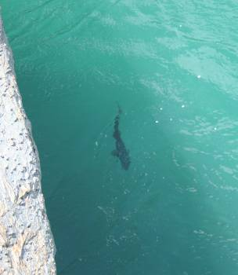

釣行日誌 ＮＺ編 「翡翠、黄金、そして銀塊」
夢の国へ、再び
2010/11/21(SUN)
大淵を望む高い岩盤の上に腰を下ろし、ディーン君と僕は、翡翠色の流れがぶつかる岩のへりに定位している黒い影を見つめている。明らかに水面上を流れてくる餌に意識を向けているその鱒は、優に60cmを越えているだろう。眼下に広がる対岸の水辺では、鰐部さんがその鱒をめがけ、かなりのロングキャストに挑もうとしている。しかし、本流をまたいでの、このキャストはだいぶ難しいものになるだろうと思えた。

第一投、距離が足らない。第二投、フライの落ちた場所が遠い。第三投、落ちたフライにドラッグが掛かる。それから幾度か試みた後、毛針がどんぴしゃの位置に落ちて流下を始める。ロイヤルウルフに気づいた鱒が、ゆっくりと鼻面を反転させて動き始める.........
2010年11月21日、朝8時30分。待ち合わせ場所である名古屋駅太閤通り、ゆりの噴水前に現れた鰐部さんは、よく手入れの行き届いたダナーのブーツを履いていた。高価な靴、新しい靴を履いている人はよく見かけるが、履き込まれてなお手入れの良い靴を履いている人はなかなか居ない。靴の輝きが鰐部さんの人柄を表しているような気がした。
名古屋駅から関西空港まではニュージーランド航空の無料シャトルバスが出ている。20分ほど待つと、小型のバスがやって来て、10人ほどの乗客が乗り込んだ。途中の高速道路の渋滞で、予定よりだいぶ遅れたものの、無事関西空港にバスが着いた。トランクルームから、もう30年以上使っているシュイナード・ドラゴンの青いバックパックを引きずり出して背負い、右手にキルウェルの黒いロッドケース、左手にグレゴリーのデイパックを持つ。気分はすでにＮＺ南島西海岸である。
空港で１時間ほど待ち時間があったので、鰐部さんと腹ごしらえをすることにした。関西ならうどんでしょう、ということでうどん屋に入り、きつねうどんをいただく。渋滞でお昼のご飯が遅れていたのでとてもおいしい。そのあと、鰐部さんはフィルムを買いに行き、僕は朝豊橋駅でバックパックを背負う時に、ショルダーベルトがきつく当たって壊れてしまった腕時計をベルトを修理すべく、時計屋を探した。運良く空港内に時計店が見つかり、ベルトを直してもらった。これで準備万端である。時間がきたので鰐部さんとの待ち合わせ場所に行き、二人でNZ航空のカウンターへ行く。JALとの共同運行なので、JALの係員さん達が応対してくれた。事前の情報では、ロッドケースの持ち込みが有料化されたとのことであったが、なんとか無料で機内預かりにすることができた。機内預かりの荷物の重量制限が気になっていたが、荷造りの際に体重計を利用して20kg以内に納めてきたので、こちらも無事預かってもらう事ができた。デイパックのみを機内に持ち込んで、いざ搭乗である。
旅行代理店に勤める鰐部さんが手配してくれた座席は、後部よりの通路際であり、ラッキーなことに窓際の席は空席であった。すぐ後ろに座っている鰐部さんも同様である。さすがにプロの仕事は違う。乗り込んだボーイング737-400型機のエンターテイメント装備はかなり充実しており、映画、ドラマ、音楽などのメニューを数多く選べるようになっていた。この時上映していたのは、映画「インビクタス」などであり、僕は前から見たかったこの映画を楽しんだ。ニュージーランド行きの予行演習として、英語版を見ようかと思ったが、筋が分からないとつまらないので、情けなくも日本語吹き替え版にしておいた。映画を選び終えたあたりで定刻の14:30となり、タキシングから離陸滑走に移ったNZ 98便はぐんぐんとスピードを上げて秋晴れの大阪湾に飛び立った。いよいよ明日はオークランドだ。
釣行日誌ＮＺ編 目次へ
サイトマップ
ホームへ
お問い合わせ